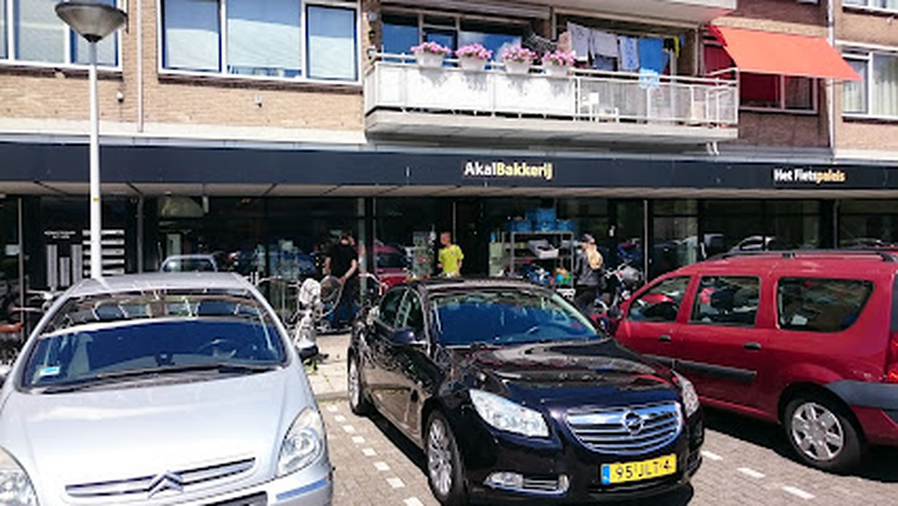

Vanaf € 5,00

Gewoon goed eten
Meer grill dan bakkerij. Precies zoals de buurt het kent.
Bij Akal haal je ’s ochtends vers brood en later op de dag een goedgevulde Turkse pizza, döner of kapsalon. Geen gedoe: snel, vriendelijk en royaal.
7 dagenper week geopend
08–20iedere dag
Afhalendirect aan de Kennedylaan
Bezorgenvia Thuisbezorgd